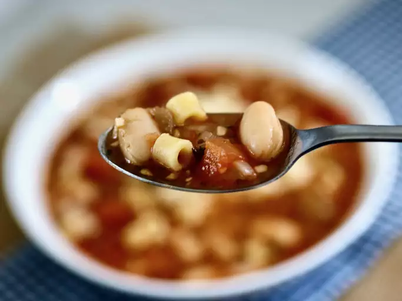
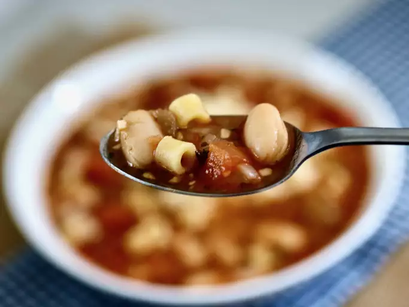
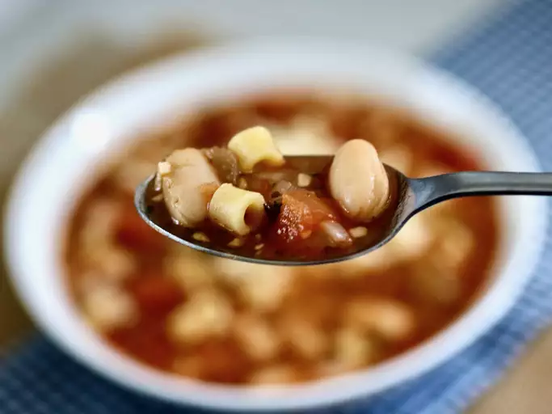
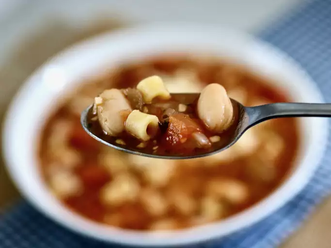

Pasta e fagioli (pasta and beans) share the spotlight with aromatics and fresh tomatoes in this traditional Italian soup. Serve with a crisp salad and a hot loaf of garlic bread and you have a meal! Garnish with shredded Parmesan cheese.
This restaurant-worthy pasta fagioli recipe is surprisingly easy (and cheap) to make at home.
These are the ingredients you'll need to make pasta e fagioli at home:
Making homemade lasagna much easier than it looks. You'll find the full, step-by-step recipe below — but here's a brief overview of what you can expect:
"This entire recipe is cheaper than one bowl at Olive Garden!"
culinary producer Nicole McLaughlin (a.k.a. NicoleMcMom) says of this pasta fagioli recipe. Here are a few of her best tips and tricks for making a perfect pot of Italian soup every time: